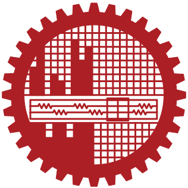
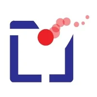
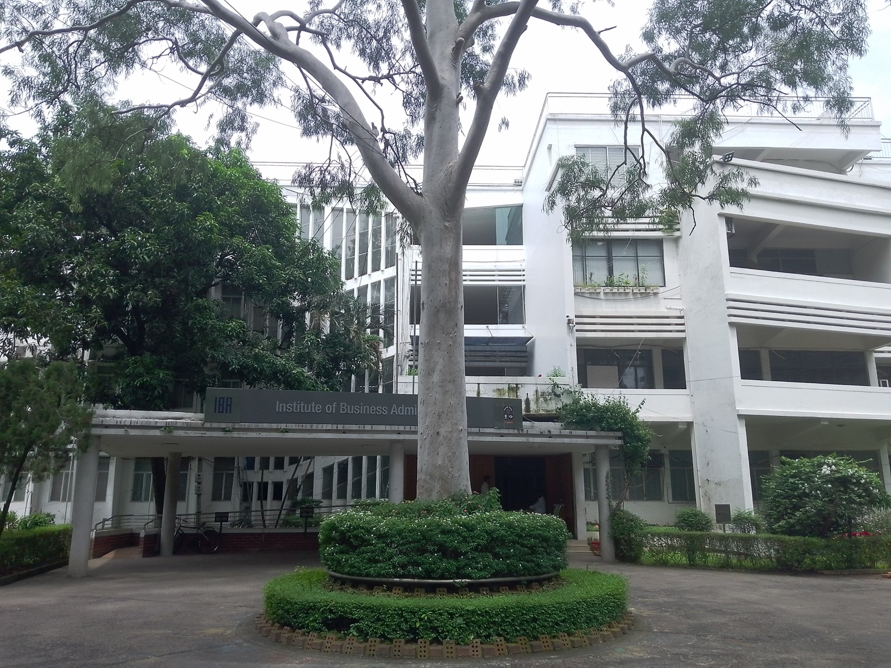

About
I study how people understand, trust and act on AI systems, and how the design of those systems shapes their choices. My current study, with Dr. Novia Nurain at BUET, looks at how freelance designers in Bangladesh deal with dark patterns in interfaces that AI tools generate for their clients. By day I am Product Lead at Advanced AI Lab Limited, and I studied business at IBA, University of Dhaka, majoring in finance.
Outside work, I love travelling and seeing new places. I also build small interactive things for fun, mostly games and web apps.
Research
All researchDark patterns in AI-generated interfaces
Freelancers now hand clients interfaces that an AI tool drafted. This study asks how they spot the manipulative parts, and what they change or send anyway.

Dr. Novia Nurain
UX-centred product management at BeeBooks
A case study of an accounting product built for small-business owners who are not accountants.
- Mushtaque Ahmed
What Bangladeshi viewers want from Chorki
Audience research for a Bangladeshi streaming platform, presented to the Chorki team.
- IBA, University of Dhaka
- Prothom Alo
Work
All work
Product ManagerPridesys IT Ltd.I led interface design for a government platform for farmers, and built an AI accounting app for small-business owners who are not accountants.Sep 2025 to May 2026 Digital Strategy and Project ConsultantIndependent / Vera Ink BDI run brand and digital strategy for clients including Prime Bank, Tearfund and JCI.Jan 2023 to present
Institute of Business Administration, University of Dhaka
Bachelor of Business Administration, 2021 to 2026
- Major
- Finance
- Minor
- Marketing
Photo: IBA building, DU by Yahya, CC BY-SA 4.0.